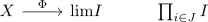

profinite space as totally disconnetced compact Hausdorff-Space
Proposition
Let $X$ be a topological space
TFAE:
- $X$ is a profinite space
- $X$ is totally disconnected, compact hausdorff
Proof
1) $\implies$ 2)
totally disconnected
compact hausdorff
where finite discrete spaces are compact hausdorff
2) $\implies$ 1)
Let $X$ be a topological space and $J$ be the partially ordered set consisting of
- finite sets $I$ together with a disjoint decomposition into clopen subsets $X = \coprod_{i=1}^n U_i$
- $I' \leq I$ if the cover of $I'$ refines the cover of $I$, i.e. for each $U_{i'}$ defined for $i' \in I'$ there exists an $i\in I$ such that $U_{i'} \subseteq U_{i}$
Then the poset is cofiltered: for $I_1,I_2$ we can define $I_1 \cap I_2 \coloneqq I_1 \times I_2$ by taking the intersections (and optionally throwing out empty sets).
For any $I \in J$ there exists a canonical continous map
where $I^{\delta}$ carries the discrete topology.
Now each map is comatible with refinements via the projection, i.e. $i' \mapsto i$ if and only if $U_{i'} \subseteq U_i$.
Hence we get a map
where the RHS is profinite by definition.
Hence it suffices to show that this is a homeomorphism: Here since forgetful functor from CompHaus to Set is conservative, it suffices to show that it is a Bijection
injective
Let $C(x)$ be the connected component of $x$ in $X$. Then we will show that $\Phi(x) = \Phi(x')$ if and only if $x' \in C(x)$. If we can show this, then $\Phi$ is injective (since $X$ is totally disconnected).
So consider the composition

So $\Phi(x) = \Phi(x')$ iff for each clopen subset $U$ containing $x$ also contains $x'$. But for that we use connected component of a compact hausdorff set as intersection of clopen sets, so the condition above is equivalent to $x' \in C(x)$
surjective
Let $p_j: \mathrm{lim}_{I \in J} I \rightarrow J$ be the canonical projection. Then observe that